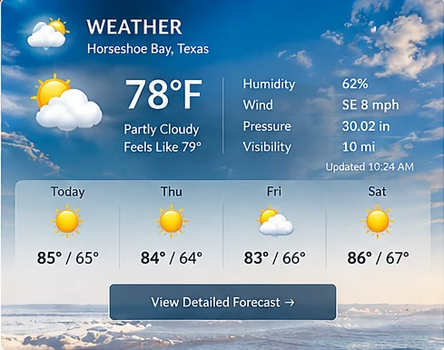

Hill Country Fall Weather: What Residents Should Watch

Horseshoe Bay Now original local information feature.
Fall in the Texas Hill Country can bring sharp changes in temperature as cold fronts move south. Warm afternoons may give way to noticeably cooler mornings, sometimes within a short period.
Thunderstorms can also develop along or ahead of frontal boundaries. Residents should monitor National Weather Service forecasts and alerts rather than assuming that the cooler season means severe weather is over.
When rain is heavy, low-water crossings deserve special caution. Never drive through flooded roads; water depth and roadway damage can be difficult to judge.
For day-to-day planning, keep a light jacket available, check hourly forecasts before outdoor events, and make sure weather alerts are enabled on a phone. This article describes seasonal patterns, not a forecast for a particular day.